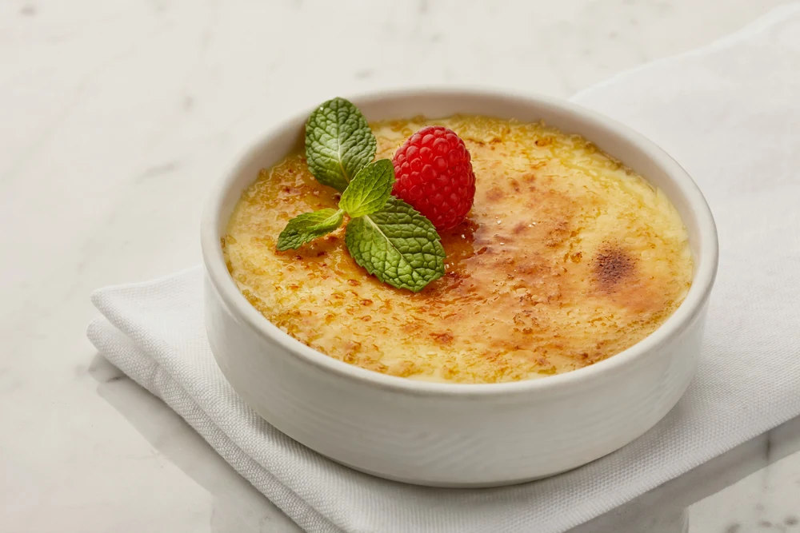
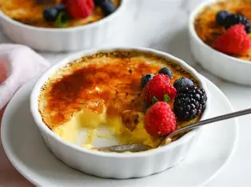
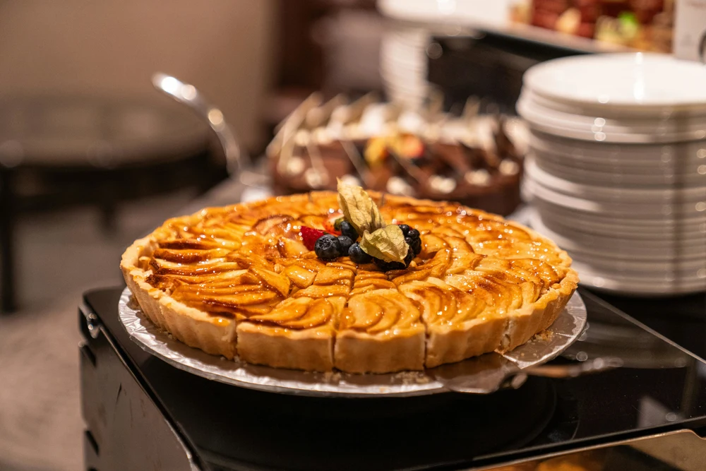
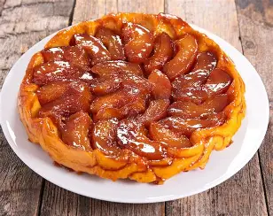
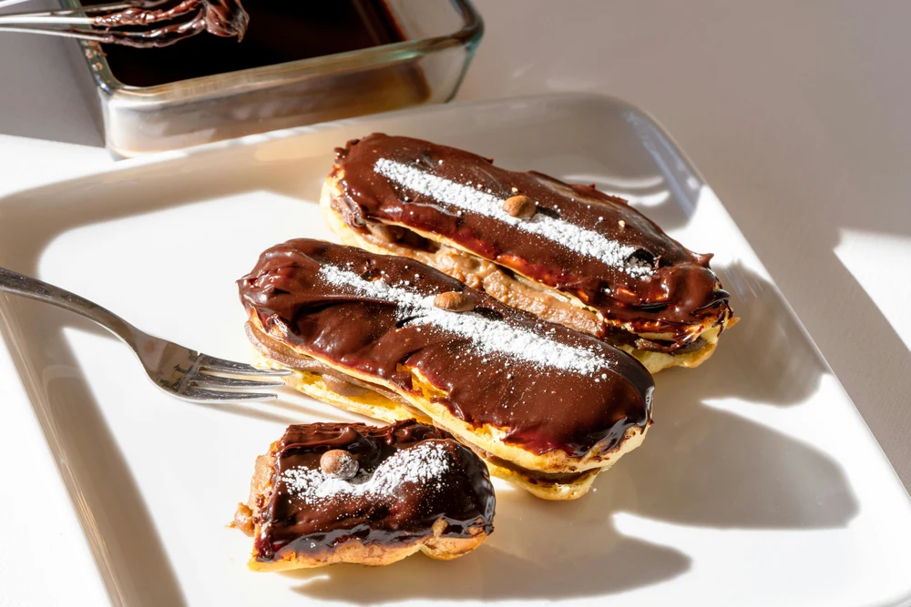
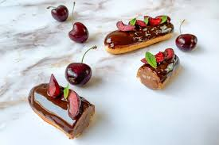

Sobremesas Famosas
Crème Brûlée
O crème brûlée é um creme de baunilha coberto com uma fina camada de açúcar caramelizado. A origem exata do crème brûlée é incerta, mas acredita-se que tenha sido criado na França no século XVII. O nome "crème brûlée" significa "creme queimado" em francês, referindo-se à camada de açúcar caramelizado que é queimada para criar uma crosta crocante. O crème brûlée é tradicionalmente servido em ramequins individuais e é apreciado por sua textura suave e sabor doce.


Tarte Tatin
A tarte tatin é uma torta francesa de pão de mel, com origem na França no século XVIII. É uma torta de frutas, geralmente feita com maçãs, coberta com uma camada de açúcar e manteiga derretida. A tarte tatin é servida quente ou fria e é apreciada por sua textura crocante e sabor doce.


Éclair
O éclair é um doce francês feito com massa de pão de mel recheada com creme e coberta com uma camada de açúcar e chocolate. É um dos doces mais conhecidos da culinária francesa e é servido quente ou frio. O nome "éclair" significa "relâmpago" em francês, referindo-se à forma alongada do doce.

